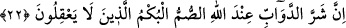
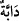

21. İşitmedikleri halde “İşittik” diyenler gibi olmayın.
Siz emir ve nehiylere muhalefet ederek, “işitmedikleri halde” yani kabûl etmek için
değil de reddetmek ve yüz çevirmek için dinledikleri halde “Biz kabul etmek üzere
“işittik” diyenler gibi olmayın.” “İşittik ve isyan ettik.” (el-Bakara, 2/93) diyen
kâfirler ve dinleyip kabul ettiklerini dilleriyle iddia eden fakat içlerinde inkar ve
yalanlamayı gizleyen münafıklar gibi olmaktan sakının.
Mesnevî’de şöyle denilmiştir:
Otu ha çağırmışsın, ha çağırmamışsın
Ayağı toprağa çakılıp kalmıştır.
Rüzgarın tesiriyle başını sallasa da
Aldanma sen onun baş sallamasına
Ey seher yeli! Başı «duyduk» der ama
Ayağı «isyan ediyoruz, bırak bizi» der
22. Şüphesiz Allah katında canlıların en kötüsü, düşünmeyen sağırlar ve
dilsizlerdir.
“Şüphesiz Allah katında” Allah’ın hükmüne göre yeryüzünde yürüyen “canlıların”
veya kara ve denizde yaşayan dört ayaklı hayvanların “en kötüsü,” hakkı
“düşünmeyen” hakkı işitmeyen “sağırlar ve” hakkı söylemeyen “dilsizlerdir.”
“” kelimesi, lügat mânâsı dikkate alındığında “yeryüzünde yürüyen canlılar”, örfî
mânâsı dikkate alındığında “kara ve denizde yaşayan dört ayaklı hayvanlar” demek olur.
Allah, onları hayvanlardan saymış, sonra da kendilerini onların en kötüsü kılmıştır.
Çünkü bu kimseler, hayvanlardan farklı olarak kendilerine verilen ve onlardan üstün
kılınmalarına sebep olan özelliklerini kaybetmiştir. Onları akılsızlıkla vasfetmesi ise
sağır ve dilsiz olan akıllı olduğu zaman bazı şeyleri anlayabilir ve işaretle de başkasına
anlatabilir. Böylece bazı isteklerine ulaşabilir. Fakat sağırlık ve dilsizlikle birlikte
akılsız da olursa kötülük ve şerlilik bakımından had safhaya varmış olur.
Sa‘dî der ki:
Hayvanlar suskun, insanlar konuşurlar
Ama saçma sapan söyleyen kimse, hayvandan da beter
İnsanoğlu konuşması ve aklı ile bilinir
Sen de papağan gibi konuş, ancak cahil olma